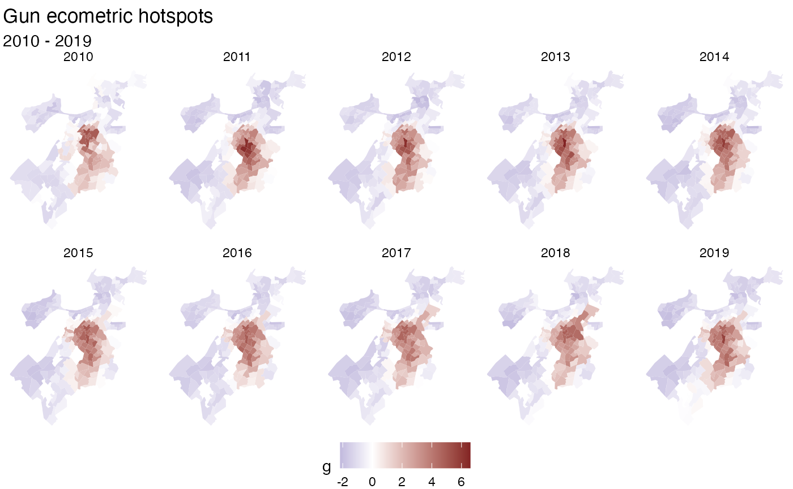

While not too far from the initial CRAN release of sfdep, this version consists of two sizable additions relating to spatio-temporal analysis and colocation analysis as well as bug fixes and improvements. Additional functionality is added regarding point-pattern analysis and neighbor / weight list utilities. Given the breadth of the additions, this represents a minor version release.
Colocation Analysis
This release includes functionality to compute colocation quotients. This is extremely exciting as this is the first open source implementation of Colocation Quotients that I am aware of. There are three types of colocation quotient (CLQ) in this release: the global CLQ, pairwise CLQ, and local CLQ.
See the colocation vignette for a more detailed write up.
There are three new functions for calculating CLQs:
Spacetime
And probably most notable, is the introduction of a new spacetime class. This class was created as a byproduct of creating functionality for emerging hot spot analysis. For a more detailed write up see the spacetime vignette.
The new functions that are available are:
-
spacetime(),new_spacetime(),validate_spacetime():- Creating spacetime objects
-
activate(),active():- changing spacetime context and determining active context
-
as_sf(),as_spacetime():- casting between spacetime and sf objects
-
is_spacetime():- determine if an object is a spacetime object
-
is_spacetime_cube():- determine if a spacetime object is a spatio-temporal full grid aka spacetime cube
-
complete_spacetime_cube():- if a spatio-temporal sparse grid, add rows to make a spatio-temporal full grid (spacetime cube)
-
set_col(),set_nbs(),set_wts():- add columns from geometry context to data context
-
emerging_hotspot_analysis():- conduct emerging hotspot analysis
-
spt_update():- update times and locations attributes of a spacetime object
df_fp <- system.file("extdata", "bos-ecometric.csv", package = "sfdep")
geo_fp <- system.file("extdata", "bos-ecometric.geojson", package = "sfdep")
# read in data
df <- readr::read_csv(df_fp, col_types = "ccidD")
geo <- sf::st_read(geo_fp)
#> Reading layer `bos-ecometric' from data source
#> `/private/var/folders/zc/tg2xwck53dg9sls8x4ndzdc00000gn/T/Rtmp2RGXTr/temp_libpath2b6f5ea0db20/sfdep/extdata/bos-ecometric.geojson'
#> using driver `GeoJSON'
#> Simple feature collection with 168 features and 1 field
#> Geometry type: POLYGON
#> Dimension: XY
#> Bounding box: xmin: -71.19115 ymin: 42.22788 xmax: -70.99445 ymax: 42.3974
#> Geodetic CRS: NAD83
# create spacetime object
bos <- spacetime(df, geo, ".region_id", "year")
bos
#> spacetime ────
#> Context:`data`
#> 168 locations `.region_id`
#> 10 time periods `year`
#> ── data context ────────────────────────────────────────────────────────────────
#> # A tibble: 1,680 × 5
#> .region_id ecometric year value time_period
#> * <chr> <chr> <int> <dbl> <date>
#> 1 25025010405 Guns 2010 0.35 2010-01-01
#> 2 25025010405 Guns 2011 0.89 2011-01-01
#> 3 25025010405 Guns 2012 1.2 2012-01-01
#> 4 25025010405 Guns 2013 0.84 2013-01-01
#> 5 25025010405 Guns 2014 1.5 2014-01-01
#> 6 25025010405 Guns 2015 1.15 2015-01-01
#> 7 25025010405 Guns 2016 1.48 2016-01-01
#> 8 25025010405 Guns 2017 1.64 2017-01-01
#> 9 25025010405 Guns 2018 0.49 2018-01-01
#> 10 25025010405 Guns 2019 0.17 2019-01-01
#> # ℹ 1,670 more rowsSpacetime objects have two contexts: data and geometry. Currently the data is activated. We can activate the geometry context like so:
activate(bos, "geometry")
#> spacetime ────
#> Context:`geometry`
#> 168 locations `.region_id`
#> 10 time periods `year`
#> ── geometry context ────────────────────────────────────────────────────────────
#> Simple feature collection with 168 features and 1 field
#> Geometry type: POLYGON
#> Dimension: XY
#> Bounding box: xmin: -71.19115 ymin: 42.22788 xmax: -70.99445 ymax: 42.3974
#> Geodetic CRS: NAD83
#> First 10 features:
#> .region_id geometry
#> 1 25025010405 POLYGON ((-71.09009 42.3466...
#> 2 25025010404 POLYGON ((-71.09066 42.3397...
#> 3 25025010801 POLYGON ((-71.08159 42.3537...
#> 4 25025010702 POLYGON ((-71.07066 42.3518...
#> 5 25025010204 POLYGON ((-71.10683 42.3487...
#> 6 25025010802 POLYGON ((-71.08159 42.3537...
#> 7 25025010104 POLYGON ((-71.08784 42.3474...
#> 8 25025000703 POLYGON ((-71.12622 42.3504...
#> 9 25025000504 POLYGON ((-71.14175 42.3404...
#> 10 25025000704 POLYGON ((-71.13551 42.3487...This is handy because we can find neighbors in our geometry and link them to our data.
library(dplyr)
#>
#> Attaching package: 'dplyr'
#> The following objects are masked from 'package:stats':
#>
#> filter, lag
#> The following objects are masked from 'package:base':
#>
#> intersect, setdiff, setequal, union
bos_nb <- bos |>
activate("geometry") |>
mutate(nb = st_contiguity(geometry),
wt = st_weights(nb))
bos_nb
#> spacetime ────
#> Context:`geometry`
#> 168 locations `.region_id`
#> 10 time periods `year`
#> ── geometry context ────────────────────────────────────────────────────────────
#> Simple feature collection with 168 features and 3 fields
#> Geometry type: POLYGON
#> Dimension: XY
#> Bounding box: xmin: -71.19115 ymin: 42.22788 xmax: -70.99445 ymax: 42.3974
#> Geodetic CRS: NAD83
#> First 10 features:
#> .region_id geometry nb
#> 1 25025010405 POLYGON ((-71.09009 42.3466... 2, 72, 93, 94, 108, 143, 144, 166
#> 2 25025010404 POLYGON ((-71.09066 42.3397... 1, 143, 166
#> 3 25025010801 POLYGON ((-71.08159 42.3537... 4, 6, 87, 164
#> 4 25025010702 POLYGON ((-71.07066 42.3518... 3, 6, 87, 112, 142
#> 5 25025010204 POLYGON ((-71.10683 42.3487... 7, 11, 72
#> 6 25025010802 POLYGON ((-71.08159 42.3537... 3, 4, 7, 87
#> 7 25025010104 POLYGON ((-71.08784 42.3474... 5, 6, 11, 72, 87
#> 8 25025000703 POLYGON ((-71.12622 42.3504... 10, 12, 145
#> 9 25025000504 POLYGON ((-71.14175 42.3404... 89, 146, 152, 154, 156
#> 10 25025000704 POLYGON ((-71.13551 42.3487... 8, 145, 146, 152
#> wt
#> 1 0.125, 0.125, 0.125, 0.125, 0.125, 0.125, 0.125, 0.125
#> 2 0.3333333, 0.3333333, 0.3333333
#> 3 0.25, 0.25, 0.25, 0.25
#> 4 0.2, 0.2, 0.2, 0.2, 0.2
#> 5 0.3333333, 0.3333333, 0.3333333
#> 6 0.25, 0.25, 0.25, 0.25
#> 7 0.2, 0.2, 0.2, 0.2, 0.2
#> 8 0.3333333, 0.3333333, 0.3333333
#> 9 0.2, 0.2, 0.2, 0.2, 0.2
#> 10 0.25, 0.25, 0.25, 0.25These can be brought over to our data context for further use.
bos_nb <- bos_nb |>
set_wts() |>
set_nbs()
bos_nb
#> spacetime ────
#> Context:`data`
#> 168 locations `.region_id`
#> 10 time periods `year`
#> ── data context ────────────────────────────────────────────────────────────────
#> # A tibble: 1,680 × 7
#> .region_id ecometric year value time_period wt nb
#> <chr> <chr> <int> <dbl> <date> <list> <list>
#> 1 25025010405 Guns 2010 0.35 2010-01-01 <dbl [8]> <int [8]>
#> 2 25025010404 Guns 2010 0 2010-01-01 <dbl [3]> <int [3]>
#> 3 25025010801 Guns 2010 0 2010-01-01 <dbl [4]> <int [4]>
#> 4 25025010702 Guns 2010 0.46 2010-01-01 <dbl [5]> <int [5]>
#> 5 25025010204 Guns 2010 0 2010-01-01 <dbl [3]> <int [3]>
#> 6 25025010802 Guns 2010 0 2010-01-01 <dbl [4]> <int [4]>
#> 7 25025010104 Guns 2010 0 2010-01-01 <dbl [5]> <int [5]>
#> 8 25025000703 Guns 2010 0 2010-01-01 <dbl [3]> <int [3]>
#> 9 25025000504 Guns 2010 0.22 2010-01-01 <dbl [5]> <int [5]>
#> 10 25025000704 Guns 2010 0 2010-01-01 <dbl [4]> <int [4]>
#> # ℹ 1,670 more rowsThen we can group our data set and calculate metrics based on different years. But this is only possible for data that are spacetime cubes. Read the spacetime vignette for more. We can check if this object meets the conditions to be a spacetime cube.
is_spacetime_cube(bos)
#> [1] TRUESince this is a spacetime cube, it is safe to perform statistics on each time slice.
bos_gs <- bos_nb |>
activate("data") |>
filter(ecometric == "Guns") |>
group_by(year) |>
mutate(g = local_g(value, nb, wt))
bos_gs
#> spacetime ────
#> Context:`data`
#> 168 locations `.region_id`
#> 10 time periods `year`
#> ── data context ────────────────────────────────────────────────────────────────
#> # A tibble: 1,680 × 8
#> # Groups: year [10]
#> .region_id ecometric year value time_period wt nb g
#> * <chr> <chr> <int> <dbl> <date> <list> <list> <dbl>
#> 1 25025010405 Guns 2010 0.35 2010-01-01 <dbl [8]> <int [8]> -0.987
#> 2 25025010404 Guns 2010 0 2010-01-01 <dbl [3]> <int [3]> -0.930
#> 3 25025010801 Guns 2010 0 2010-01-01 <dbl [4]> <int [4]> -1.08
#> 4 25025010702 Guns 2010 0.46 2010-01-01 <dbl [5]> <int [5]> -1.04
#> 5 25025010204 Guns 2010 0 2010-01-01 <dbl [3]> <int [3]> -0.864
#> 6 25025010802 Guns 2010 0 2010-01-01 <dbl [4]> <int [4]> -1.08
#> 7 25025010104 Guns 2010 0 2010-01-01 <dbl [5]> <int [5]> -1.33
#> 8 25025000703 Guns 2010 0 2010-01-01 <dbl [3]> <int [3]> -1.02
#> 9 25025000504 Guns 2010 0.22 2010-01-01 <dbl [5]> <int [5]> -1.34
#> 10 25025000704 Guns 2010 0 2010-01-01 <dbl [4]> <int [4]> -1.25
#> # ℹ 1,670 more rowsNow that the measure has been calculated for each timeslice, we can connect the geometries for each time slice for the purpose of visualization.
Note that the spacetime class’ objective is to avoid geometry duplication. But it is necessary for visualization with ggplot2.
We can cast to an sf object with as_sf().
library(ggplot2)
# cast to sf object. Uses merge under the hood
# so if duplicate columns exist, we can specify suffix names
as_sf(bos_gs, suffixes = c("_geo", "_data")) |>
ggplot(aes(fill = g)) +
geom_sf(color = NA) +
facet_wrap("year", nrow = 2) +
scale_fill_gradient2(
high = scales::muted("red"),
low = scales::muted("blue")
) +
labs(title = "Gun ecometric hotspots",
subtitle = "2010 - 2019") +
theme_void() +
theme(legend.position = "bottom")
Note that the holes are due to missing data in the original dataset.
Point Pattern analysis
There were a few additional functions added which pertain to point pattern analysis. Namely regarding finding centers and creating ellipses based on the centers. These functions supplement gaps in other spatial analysis libraries such as spatstat.
library(sf)
#> Linking to GEOS 3.11.0, GDAL 3.5.3, PROJ 9.1.0; sf_use_s2() is TRUE
library(sfdep)
pnts <- st_sample(guerry, 250)We can calculate the euclidean median center and plot it over all the points.
cent <- euclidean_median(pnts)
plot(pnts)
plot(cent, col = "red", pch = 17, add = TRUE)Additionally, we can identify the standard deviational ellipse for our point set.
ellip_cent <- std_dev_ellipse(pnts)
ellip <- st_ellipse(ellip_cent,
ellip_cent$sx,
ellip_cent$sy,
ellip_cent$theta)
plot(ellip)
plot(pnts, add = TRUE)